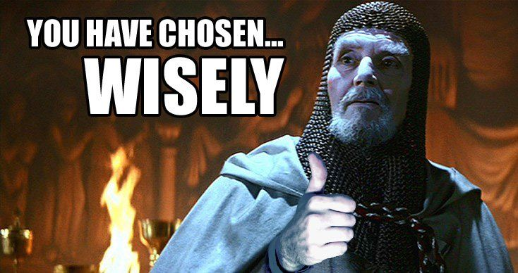

csc 510-001, (1877)
fall 2024, software engineering
Tim Menzies, timm@ieee.org, com sci, nc state
home :: syllabus :: corpus :: groups :: moodle :: license

Project1
Your task: look at the past, sell a possible future.
What to hand-in: two posters from two projects.
Where to find projects: look at our corpus
Note:

- for 25% of the teams, you will be assigned one of your two projects
for project2.
- so choose wisely
- study several projects before you settle on your two projects.
- I is estimated that you will have to look at 10 projects before you can do the following.
- If you explore our corpus you will find several projects for which is it not possible to do the following.
Rubric for posters
Each poster:
- Is a standard page size
- Uses very small fonts ( text may be as small as 4 to 6 point)
- Is a pdf file
- Does not have vast amounts of white space
- Has
- a screen snaps of the running system;
- has a url/QR code to the repo;
- optionally (but preferred) has a url/QR code to a live demo (and how you host that demo is up to you).
- Sells the software:
- i.e. up to 5 ways that this software (Version i) is better than what was true BEFORE this software was written
- Proposes a better version for version i+1
- 3 to five implementation milestones, each of which takes version i+1 to a better place
- Note that these milestones have to demonstrate a possible implementation plan, with clear goals.
- Perhaps some milestones will be explored in parallel.
- Boasts your number of test cases (one group listed 130+, which is really cool since that means you can make new changes to the system while checking if the old stuff still works)
Ways to lose points:
- Your poster does not have the above features.
- Your poster fails to sell. Specifically:
- in the first 15 seconds or reading, the poster offers does not very clear understanding of what was going on (so good intro sentence)
- the poster does not make a case that this technology stack is interesting (e.g. “select this project so you can learn about kubernetes”)
Optionally…
- If you finish this task early, and you want to get started on
project2 early, contact a tutor to get an early grade on your posters.
- If the vision is impressive, we will give you permission to start early on one of your two projects
- And what is project2 you ask?
- In project you, you implement that vision for the future of this software.
How to fail at this project
- Start late, looking at the corpus.
- Write posters for dull projects
For samples of posters from prior classes…
Please see here.
Those posters scored well, using a prior version of this document (so they would not do so well with this updated rubric).